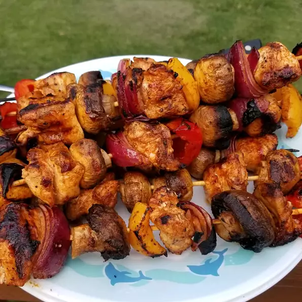

A fabolous ckicken combination with fresh vegetables and marinated flavors
Awesome marinade! It is the perfect blend of spice and citrus.
Great on the BBQ. You'll surprise how good this taste.
Ingredients
- 3 tablespoons olive oil
- 1 ½ tablespoons red wine vinegar
- 1 lime, juiced
- 1 teaspoon chili powder
- ½ teaspoon paprika
- ½ teaspoon onion powder
- ½ teaspoon garlic powder
- cayenne pepper to taste
- salt and freshly ground black pepper to taste
- 1 pound skinless, boneless chicken breast halves - cut into 1 1/2 inch pieces
- skewers
Recipe steps
- In a small bowl, whisk together the olive oil, vinegar, and lime juice. Season with chili powder, paprika, onion powder,
garlic powder, cayenne pepper, salt, and black pepper. Place the chicken in a shallow baking dish with the sauce
and stir to coat. Cover, and marinate in the refrigerator at least 1 hour.
- Preheat the grill for medium-high heat. Thread chicken onto skewers, and discard marinade.
- Lightly oil the grill grate. Grill skewers for 10 to 15 minutes, or until the chicken juices run clear.
↑
Return to Home Page